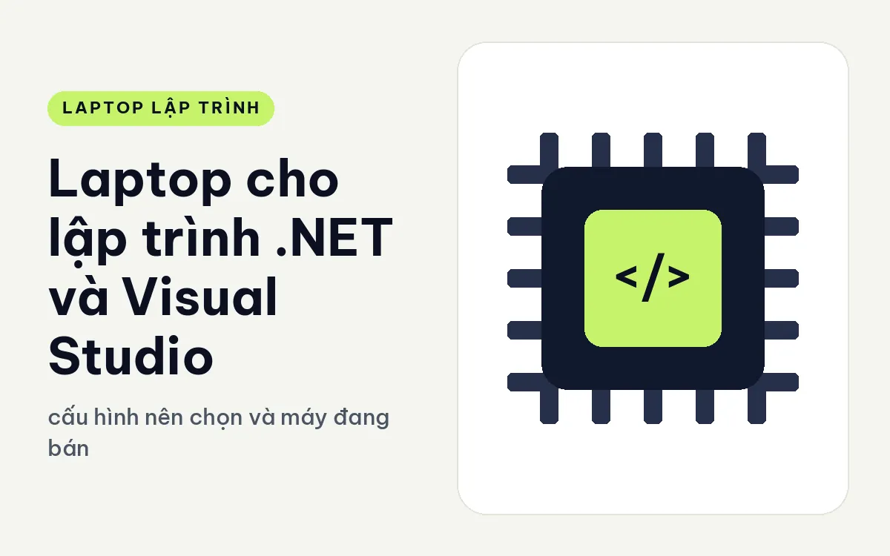
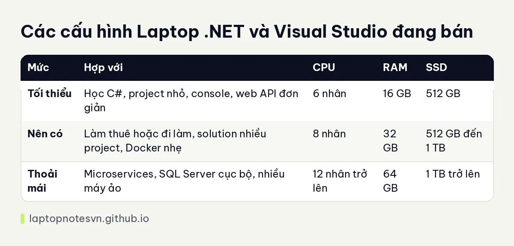

Laptop cho lập trình .NET và Visual Studio - cấu hình nên chọn và máy đang bán

Visual Studio là IDE nặng nhất trong nhóm công cụ lập trình phổ biến. Chỉ mở một solution vừa là nó đã chiếm cả vài GB RAM, chưa kể SQL Server, Docker, trình duyệt và Teams chạy cạnh bên. Vì vậy câu hỏi chọn laptop cho dân .NET thường quay về một chữ: RAM.
Bài này đi qua những phần cứng ảnh hưởng nhất khi làm việc với C#, ASP.NET Core, WPF hay MAUI, đưa bảng cấu hình ba mức và hai máy đang bán hợp. Các mức RAM bên dưới là kinh nghiệm tư vấn, tùy quy mô solution của bạn.
Visual Studio đòi hỏi gì ở phần cứng
RAM đứng đầu. Solution nhỏ chạy ổn trên 16 GB, nhưng khi có hàng chục project, thêm công cụ phân tích mã như ReSharper, cộng debug nhiều dịch vụ cùng lúc, bộ nhớ vơi rất nhanh. Với dự án doanh nghiệp, 32 GB là mức dễ thở.
CPU là yếu tố thứ hai. Biên dịch solution lớn dùng nhiều nhân, và trình phân tích mã chạy ngầm cũng cần luồng riêng. Chip 8 nhân trở lên giúp thời gian build mỗi lần bấm F5 ngắn lại thấy rõ so với chip 4 nhân.
SSD nhanh ảnh hưởng đến thời gian mở solution, khôi phục gói NuGet và chạy test. Visual Studio cài đủ workload đã ngốn vài chục GB, nên chọn ổ 512 GB trở lên.
Card rời hầu như không cần với .NET thuần. Trừ khi bạn làm game bằng Unity hoặc xử lý dữ liệu bằng GPU, đồ họa tích hợp là đủ. Tiền dành cho card rời nên chuyển sang RAM hoặc màn hình tốt hơn.
Cuối cùng là hệ điều hành. Visual Studio bản đầy đủ chạy trên Windows, nên máy cài Windows 11 Pro sẵn sẽ tiện, và bản Pro cũng cho bật Hyper-V, Windows Sandbox khi cần.
Mức máy theo khối lượng việc
| Mức | Hợp với | CPU | RAM | SSD |
|---|---|---|---|---|
| Tối thiểu | Học C#, project nhỏ, console, web API đơn giản | 6 nhân | 16 GB | 512 GB |
| Nên có | Làm thuê hoặc đi làm, solution nhiều project, Docker nhẹ | 8 nhân | 32 GB | 512 GB đến 1 TB |
| Thoải mái | Microservices, SQL Server cục bộ, nhiều máy ảo | 12 nhân trở lên | 64 GB | 1 TB trở lên |
Nếu muốn hiểu vì sao các mức RAM lại chia như vậy, bài lập trình viên cần bao nhiêu RAM phân tích theo từng kiểu công việc.

Những mẫu máy nên cân nhắc
Đáng chú ý nhất cho dân .NET là Lenovo ThinkPad T14 Gen 7 (2026). Màn 14 inch WUXGA, chip Core Ultra 5 325 hoặc Core Ultra 7 355 đều 8 nhân, RAM 32GB LPDDR5x 7467 dạng LPCAMM2 và có thể nâng đến 64GB, SSD 512GB. Máy nặng từ 1,29 kg, dày 15,88 đến 21,95 mm. RAM 32GB ngay từ đầu giải quyết bài toán Visual Studio kèm Docker.
Bàn phím ThinkPad có độ nảy khoảng 1,5 mm, hợp người gõ code lâu. Nếu muốn mua bản có 512GB thì bạn nên dự tính ổ ngoài hoặc nâng ổ, vì nhiều workload Visual Studio cộng với image Docker sẽ chiếm kha khá chỗ.
Lựa chọn thứ hai là HP EliteBook 8 G2i 14 Next Gen AI (2026), hợp với người dùng văn phòng doanh nghiệp. Máy dùng Core Ultra 5 325, RAM LPDDR5X 8533 dung lượng 16GB hàn trên bo mạch, SSD 512GB, màn WUXGA 300 nits, nặng 1,4 kg, pin 62Wh, có HDMI 2.1 và Thunderbolt 4, cài sẵn Windows 11 Pro. Vì RAM hàn nên bạn cần chọn đúng dung lượng ngay từ lúc mua, và 16GB phù hợp với solution vừa chứ chưa phải microservice nặng.
Chọn theo kiểu dự án .NET
Web API và ứng dụng ASP.NET Core vừa phải chạy khá thoải mái trên cấu hình 16GB, miễn là bạn không chạy cùng lúc quá nhiều container. Ứng dụng desktop WPF hay WinForms nặng ở phần thiết kế giao diện, nhưng cũng không đòi GPU riêng.
Dân làm MAUI hoặc Xamarin để ra ứng dụng di động cần thêm trình giả lập Android. Trình giả lập ngốn thêm vài GB RAM và nhiều nhân, nên với nhóm này 32GB gần như là điểm xuất phát. Ngoài ra, nếu bạn chạy SQL Server cục bộ cùng Visual Studio thì cũng nên tính RAM theo hướng đó.
Với dự án nội bộ doanh nghiệp, đa số đội còn dùng Azure DevOps hoặc GitHub để chạy build trên máy chủ. Khi đó laptop chủ yếu để viết và debug, không phải để build mọi thứ, và bạn có thể chọn cấu hình vừa phải, ưu tiên bàn phím cùng màn hình dễ chịu.
Kinh nghiệm cài đặt cho lập trình .NET và Visual Studio
- Chỉ cài workload cần dùng khi cài Visual Studio. Cài đủ mọi workload làm tốn ổ và kéo dài thời gian cập nhật.
- Bỏ thư mục dự án và thư mục NuGet ra khỏi quét thời gian thực của trình diệt virus, hoặc đưa vào danh sách loại trừ, thời gian build giảm khá rõ.
- Đặt thư mục dự án gần gốc ổ đĩa để tránh lỗi đường dẫn quá dài, vốn hay gặp với solution lồng nhiều tầng.
- Giới hạn RAM cho Docker Desktop hoặc WSL2, nếu không nó sẽ chiếm phần lớn bộ nhớ khi bạn mở nhiều container.
- Bật chế độ hiệu năng khi cắm sạc, và nhớ cập nhật Visual Studio định kỳ vì mỗi bản sửa nhiều lỗi bộ nhớ.
Nếu bạn làm cả web .NET lẫn đóng gói bằng container, hãy đọc cách chia tài nguyên trong bài laptop cho DevOps và cloud.
Đăng ngày 09/11/2026